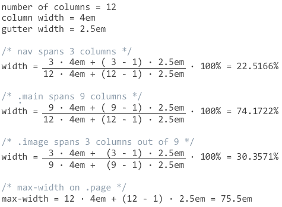
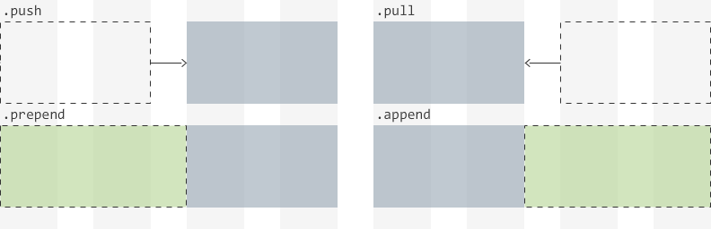
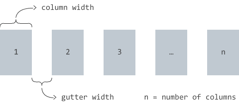

What? Another framework?
Let's start with what Justify Grid is not. It's not yet another bloated grid framework, who would want that? Justify Grid is much more than that... or better yet, much less. Want to know what Justify Grid is exactly?
You got my attention, what is Justify Grid?
A new way to create layouts! How you use it depends on you... and your expertise. Justify Grid is whatever you want it to be. Here are some options to get you started.
Methodology
You want to know more about the methodology of Justify Grid without being forced how to implement it?
Tip: This is a good place to start even if you're ending up using Sass or the framework!
Sass helpers
If you use Sass, you'll love the easy to use helpers. These will keep your CSS light and your markup clean.
Recommended
A framework
Just the grid, nothing more. Promise! Customizable and easy to use for prototyping or for novice CSS authors.
The Methodology
Solving a problem
The problem with CSS is that for a long time it had no intuitive way of creating layouts. That is all about to change, but for now we are stuck with using conventional methods like using floats or inline-blocks if we care about browser support.
People have been very creative solving the problem using floats and they are often used for creating layouts, but they need clearfixes and unsemantic row wrappers to work.
Inline-blocks, however, don't require clearfixes and because they behave like text they don't require row wrappers either. The problem with inline-blocks is, because they behave like text, whitespace between them in markup shows up as whitespace between them in layout. Current solutions battle this whitespace either by removing the whitespace from markup or by using negative word and letter spacing.
A problem with both floats and current inline-block solutions is sub-pixel rounding. Browser vendors each have their own implementation with an unpredictable rounding error as result. This is a problem with fluid layouts, where grids break easily if the column widths add up to over 100% after rounding errors. Another problem is how do you create the gutter? There are too many solutions to go into details on this but all share the same flaw. They either require additional markup to keep gutter in-between or they don't allow grid nesting.
The future of layouts might be CSS Grid Layout or Flexible Box Layout, but for now they are not usable in most production environments because of browser support and unfinished specification.
Justify Grid to the rescue!
Justify Grid solves all problems with just one simple property: text-align: justify;
- Whitespace between columns
- Sub-pixel rounding errors
- Robust in-between gutter
While conventional methods using inline-blocks try to battle whitespace, Justify Grid is unique by using this whitespace as a feature. You won't ever need to worry about whitespace, rounding errors and calculating margins again. They are all solved by justify aligning the columns, the core principle of Justify Grid.
Enough introduction. Let's take a look at some examples!
Example: Simple 2-column layout
The simplest use case would be a cookie-cutter 2-column layout. The left column being the navigation and the right column being the main content. This can be solved as follows:
<div class="page">
<header></header>
<nav></nav>
<div class="main"></div>
<footer></footer>
</div>.page {
text-align: justify;
}
header, nav, .main, footer {
text-align: left;
}
nav, .main, footer {
vertical-align: top;
display: inline-block;
width: 100%;
}
nav {
width: 22.5166%;
}
.main {
width: 74.1722%;
}Note that even though the footer is full-width, it's still declared as inline-block. The reason for this is to make sure justify alignment works, every line with inline-blocks has to be succeeded either by another line of inline-blocks or a full-width inline-block.
Example: Justify aligning last row
If there is no succeeding full-width element you have to add it with a pseudo-element:
<div class="main">
<h1>Image Gallery</h1>
<div class="image"></div>
<div class="image"></div>
<div class="image"></div>
</div>.main {
text-align: justify;
font-size: 0;
}
.main:after {
content: '';
display: inline-block;
width: 100%;
}
h1, .image {
text-align: left;
font-size: medium;
}
.image {
vertical-align: top;
display: inline-block;
width: 30.3571%;
}Note font-size: 0;, this is needed to hide the pseudo-element.
This results in an issue with Internet Explorer which will be addressed later.
Putting it all together
For now the only thing left to do is explain how to get the width values. The examples use fluid widths so percentages are being used, but they are based on fixed widths by dividing total column width plus total gutter width by parent width.

Calculating percentages based on fixed widths might seem odd at first, but it results in nice and consistent column and gutter width. By setting a max-width the percentage widths will match the fixed widths on a large enough screen. Setting max-width in rems makes sense if the font-size on that element is zero.
Putting it all together on CodePen:
Overcoming cross-browser difficulties
Internet Explorer has an issue with font-size: 0; causing whitespace to collapse instead of expanded by justify aligning.
There are other ways to hide the pseudo-element like line-height: 0; but Justify Grid is using font-size because it's fixing a Chrome issue as well.
Internet Explorer has an easy solution anyway, text-justify: distribute-all-lines;
A more known issue with Internet Explorer 7 and older is it's lack of inline-block support.
If such browser support is needed this can be fixed with display: inline; zoom: 1;
Chrome has several issues as well.
Using linebreaks only between inline-blocks gives a gap when the last row needs to be justified.
This is fixed by font-size: 0;
Known issues and limitations
Because of font-size: 0; setting font-size using ems on child elements won't work.
This is especially a problem for headings, use rems with px fallback.
If the first inline-block in a line is smaller than the total width of the gutter on the previous line, that element won't wrap as intended.
In Chrome, sub-pixel rounding errors are occasionally visible. The effect is minor and will never break the grid though. Percentages with high enough precision almost mitigate this issue completely.
In Opera, there is a bug with setting font-size to 0 causing too wide gaps between inline-blocks.
A possible fix could be font-size: 0.5px;.
The Sass helpers
These are the basic Sass helpers. For brevity on this page, I've left out the old Internet Explorer fixes and some mixins for column swapping and filling. You can find more on the Github project page.
$columns: 12 !default;
$column-width: 4em !default;
$gutter-width: 2.5em !default;
%grid {
text-align: justify !important;
text-justify: distribute-all-lines;
font-size: 0 !important;
& > * {
text-align: left;
font-size: medium;
}
&:after {
content: '';
display: inline-block;
width: 100%;
}
}
%grid-cell {
vertical-align: top;
display: inline-block;
width: 100%;
}
@function grid-span($cols, $total: $columns) {
@return ($column-width * $cols + $gutter-width * ($cols - 1)) /
($column-width * $total + $gutter-width * ($total - 1)) * 100%;
}Quick usage: extend the placeholders %grid and %grid-cell where needed outside of Media Queries.
Then use the function grid-span, probably inside Media Queries, to set the width on elements extending %grid-cell using the column span as parameter.
For example to span 3 columns, use width: grid-span(3);.
The second parameter is only needed for nested grids.
Note: for Opera support, you might want to try font-size: 0.5px; instead of 0.
This is something that will need more testing.
The Framework
The grid framework is a customizable and easy to use way to get familiar with Justify Grid, or with CSS layouts in general. It's using classes commonly found in other grid frameworks such as span, push, pull, prepend and append.
The main class is .grid, the wrapper class, that will make all it's children elements 100% width inline-blocks.
To create columns, add .span classes to one or more of those children to make them span less than full width.
Column order can be rearranged by using the optional .push and .pull classes, which are using relative positioning.
The optional .prepend and .append classes should be used to add margin if the total span of a line is less than the number of columns.

Preview customized column spans on CodePen »
Customize your build
